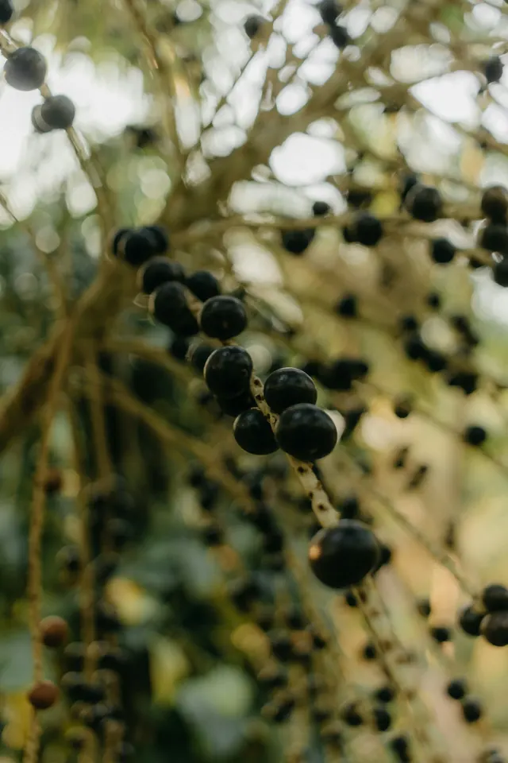

Frooters · Woher unsere Açaí kommt
Hoch oben
in der Palme.
Dort hängt sie, dunkel und klein. Scroll weiter und folg ihr bis in die Bowl.
Scrollen: der Beere folgen
Station 1 · Herkunft
Am Amazonas.
Açaí wächst an der Palme Euterpe oleracea, vor allem im Bundesstaat Pará im Norden Brasiliens. Die schlanken Palmen stehen an Flussufern und werden über 25 Meter hoch.


Station 2 · Ernte
Von Hand gepflückt.
Pflücker klettern die Stämme hinauf und holen die reifen Rispen herunter. Noch am selben Tag werden die Beeren zu Fruchtmark verarbeitet und tiefgefroren.
Station 3 · Powerfood
Was in der kleinen Beere steckt.
- AnthocyaneDer dunkle Farbstoff, der die Beere fast schwarz macht.
- PolyphenolePflanzenstoffe, wie sie in dunklen Beeren stecken.
- BallaststoffeAus dem Fruchtfleisch, machen die Bowl sämig.
- ÖlsäureOmega-9-Fett, dasselbe wie im Olivenöl.
- MineralstoffeKalium, Calcium und Magnesium.
- <1 g Zuckerin 100 g ungesüßtem Fruchtmark.

Station 4 · Ankunft
Die Bowl.
Gefrorenes Açaí, frische Beeren, Granola und ein Hauch Nussmus. So landet die Beere bei Frooters in deiner Bowl.
Ende der Reise. Lust bekommen?
Zu den Standorten →